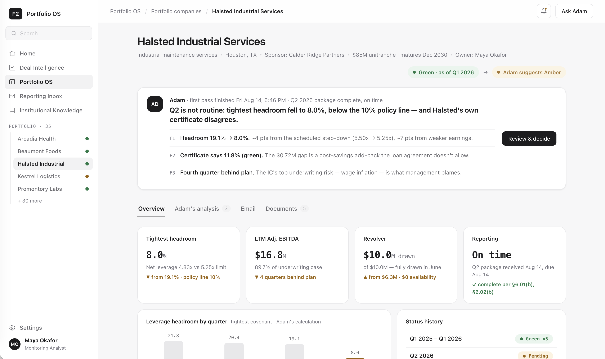
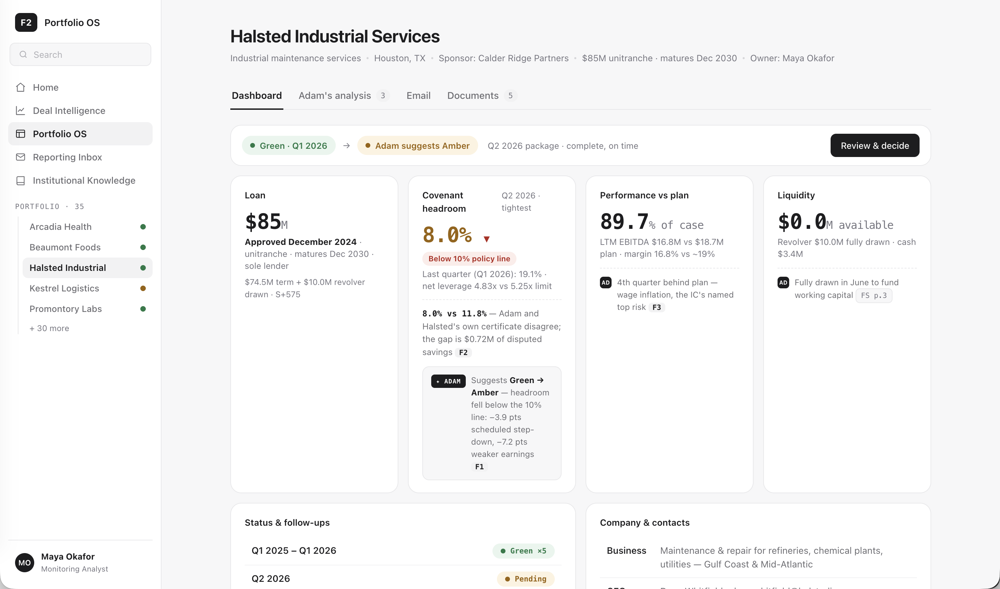
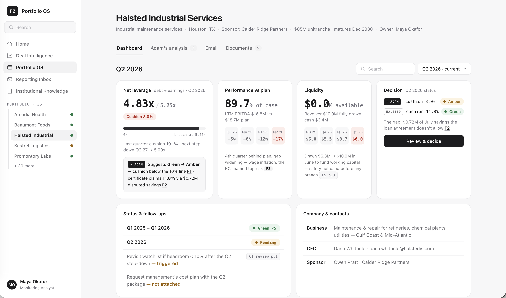
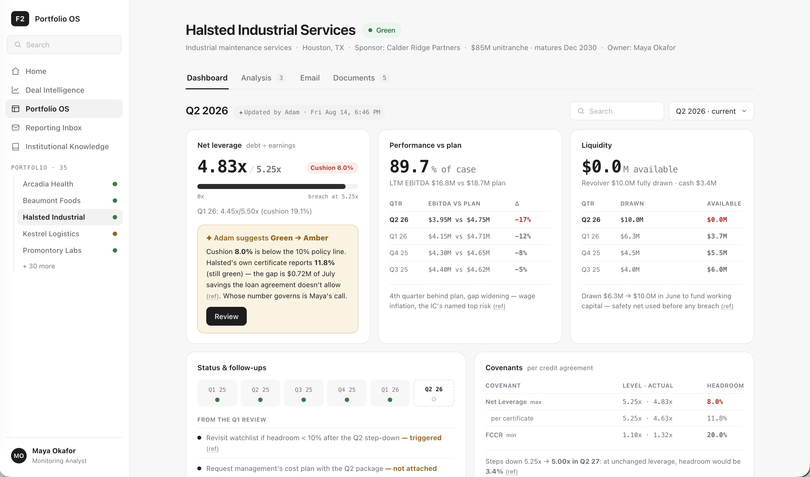
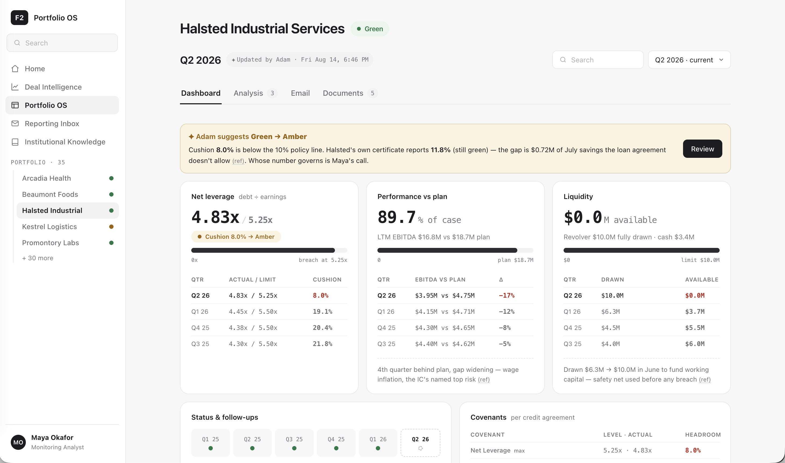
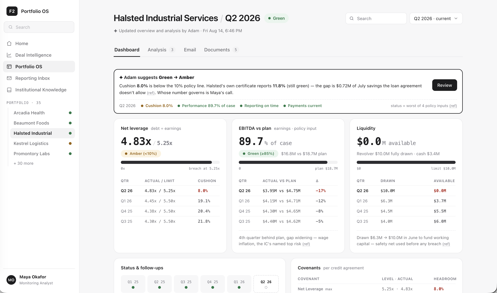

When Maya lands on the workspace, she wants to quickly review the high-level state of Q2 2026 and determine whether the health status needs to change.
Adam's analysis shows the cushion dropped to 8.0%, below the 10% policy line — hence the suggested downgrade. I prioritized Adam's number over Halsted's certificate because it follows the standardized definition the whole platform uses — the loan agreement's own terms — making it the more defensible figure.
1 · Which cards earn the top of the dashboard. I worked with AI to pressure-test what Maya actually re-checks every quarter, and landed on three: Net leverage (the covenant itself), EBITDA vs plan (the second policy input, and the "why" behind the cushion drop), and Liquidity (not a policy input, but the survival signal — revolver went fully drawn before anything breached). Along the way we cut a Loan card (static, already in the header), merged leverage and cushion into one card (same fact, two layers), and killed a standalone Adam card so his findings live inside the metrics they belong to.
2 · The banner as the action guide. One banner carries Adam's suggestion, the dispute (8.0% vs 11.8%), and the four policy inputs with only one tripped — then hands Maya a single Review action. The modal is split Review / Decide & act: evidence on the left ($0.72M add-back isolated, sources linked), status + reason + follow-ups on the right, one recorded flow.
3 · Most of the time went into making the cards scannable. Dozens of small passes: every card shares one anatomy (big number → status pill → bar against its reference line → newest-first quarterly table); bars pinned to the same height across cards; policy verdicts as matching pills (Amber <10%, Green ≥85%); breakdowns flipped from chips to aligned columns with explicit $M units; citations unified into one quiet (ref) mark. The goal: Maya reads the row in seconds, and every deeper question is one click down.
Tool: Claude Code, ~50 prompts from brief to prototype, every one logged verbatim. The split: I set direction, structure, and taste — what deserves a card, what the top number is, when a screen is too cluttered, when a label is wrong. AI read the data pack, wired every figure to its source page, drafted layouts and copy, and explained the credit mechanics I challenged it on.
The useful pattern wasn't generation — it was argument. Before touching the UI I asked it to defend choices: why Performance and Liquidity deserve permanent cards, whether leverage and headroom are the same fact (they are — so they became one card), whether "Confirm" biased the journey toward agreeing with the AI (it did — renamed to Review → Decide → Act). I also used it as a domain tutor mid-design: LTM vs single-quarter, stock vs flow on the revolver, step-down vs policy — each answer sharpened what the cards needed to say.
Then dozens of rapid visual rounds — spacing, pill formats, column alignment, banner tone — where I corrected and it applied, usually in one pass. AI compressed the mechanics; the judgment calls stayed mine.





